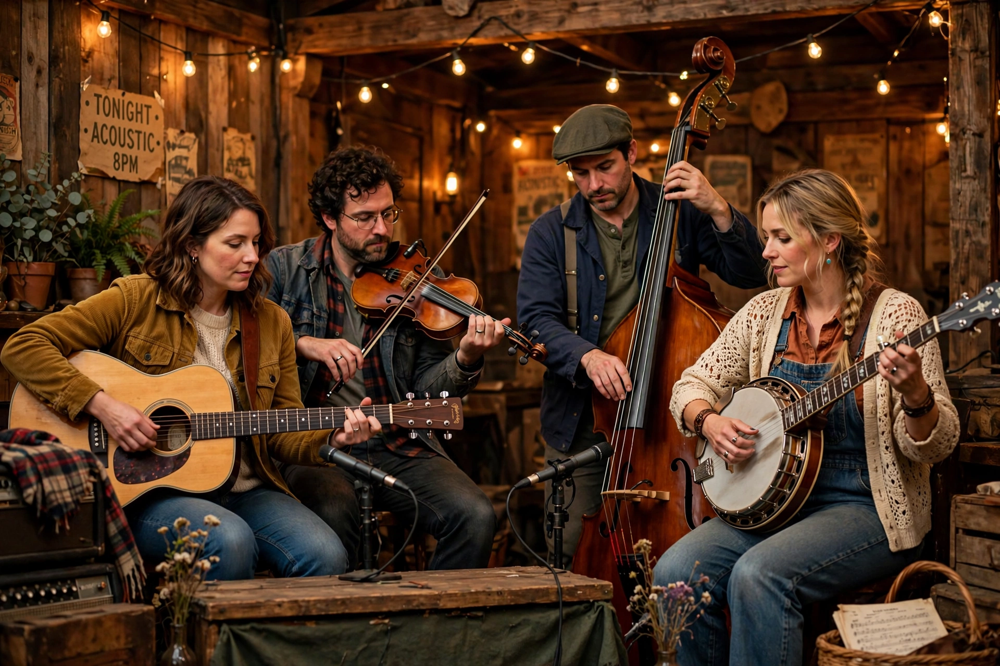

Americana (music)
| Americana | |
|---|---|
 | |
| An Americana ensemble performing live | |
| Stylistic origins | Country, folk, bluegrass, blues, R&B, roots rock |
| Cultural origins | 1990s, United States (as a radio format and genre label) |
| Key body | Americana Music Association (founded 1999) |
Americana — also called alt-country in some of its earlier forms — is an amalgam of American roots music formed by the confluence of the shared and varied traditions that make up the country's musical ethos: country, folk, bluegrass, blues, rhythm and blues, rock and roll, and gospel. The term came into common use in the mid-1990s, first as a radio format for stations blending roots-oriented artists who did not fit mainstream country or rock formats.
Definition and institutions
The Americana Music Association, founded in 1999 and based in Nashville, defines Americana as "contemporary music that incorporates elements of various primarily acoustic American roots music styles". The association holds the annual Americana Music Honors & Awards at the Ryman Auditorium. The genre gained institutional recognition when the Grammy Awards added a Best Americana Album category in 2010; Billboard had launched an Americana/Folk Albums chart in 2009.
Artists and history
Precursors include Gram Parsons, The Band, Bob Dylan's folk-rock work, and Emmylou Harris, while the 1990s alt-country wave of Uncle Tupelo, Wilco and Lucinda Williams shaped the modern sound. Contemporary Americana artists include Jason Isbell, Brandi Carlile, Tyler Childers, Gillian Welch, The Avett Brothers and Mumford & Sons. The sound typically favours acoustic instrumentation, harmony singing and songwriting centred on storytelling.